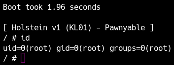
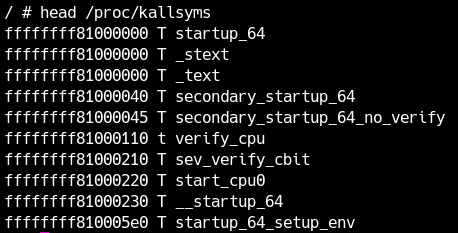
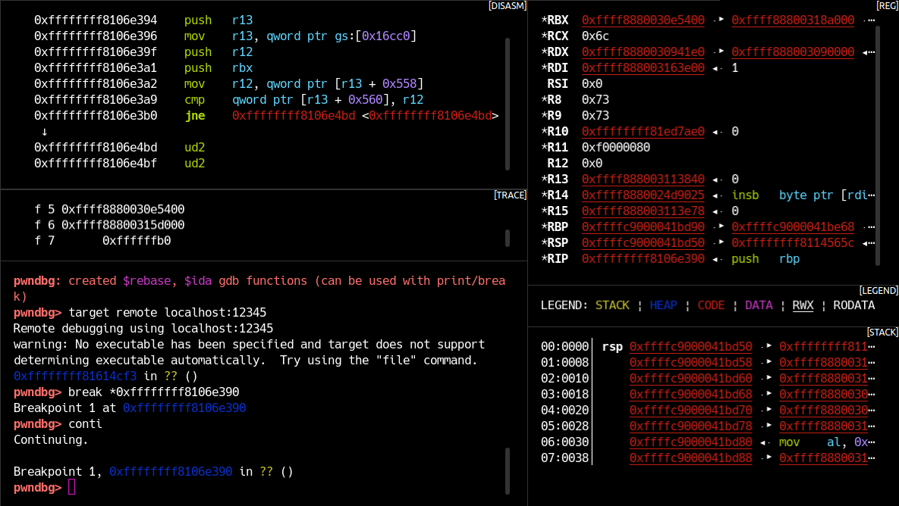
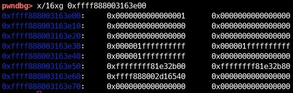
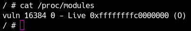
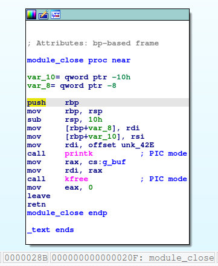
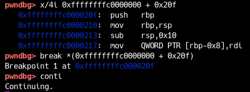

A major reason why it's difficult to get started with kernel exploitation is that you don't really know how to debug it.
In this section, you will learn how to use gdb to debug a Linux kernel running on qemu.
First, download the LK01 practice files.
Obtaining root privileges
When debugging a kernel exploit locally, having only ordinary-user privileges is often inconvenient. In particular, you need root privileges to set breakpoints in kernel or driver code and to determine which function a leaked address belongs to, because otherwise kernel-space address information is unavailable.
When debugging a kernel exploit, obtain root privileges first. This section covers the same material as exercise (2) in the previous chapter, so if you have already solved it, you can read this as a review.
When the kernel boots, it first runs a single program. The path varies by configuration, but it is usually /init or /sbin/init. If you extract LK01’s rootfs.cpio, you will find /init.
1 |
|
There is nothing particularly important in this file; it simply runs /sbin/init. In a small environment, such as one distributed with a CTF challenge, /init may directly include actions such as installing drivers or launching a shell. In fact, you can start a root shell when booting the kernel by replacing the final exec line with /bin/sh. However, we will not modify this file this time because doing so would skip other necessary initialization processes, such as driver installation.
Instead, /sbin/init eventually executes the /etc/init.d/rcS shell script. This script executes files in /etc/init.d whose names start with S. In this case, there is a script called S99pawnyable. This script performs various initialization tasks, but pay attention to the following line at the end.
1 | setsid cttyhack setuidgid 1337 sh |
This line starts the shell with ordinary-user privileges when this kernel boots. cttyhack enables input such as Ctrl+C. The setuidgid command sets the user and group IDs to 1337, and then starts /bin/sh. Change this number to 0 (the root user).
1 | setsid cttyhack setuidgid 0 sh |
As explained in the next chapter, comment out or remove the following line to disable some security mechanisms.
1 | -echo 2 > /proc/sys/kernel/kptr_restrict # Before |
After making the change, repack the archive as a cpio file and run run.sh. You should then have a root shell as shown in the screenshot below. (See the previous chapter for instructions on repacking it.)

attaching to qemu
qemu has a function for debugging with gdb. to qemu -gdb You can pass an option to listen by specifying the protocol, host, and port number.run.sh If you edit and add the following option, for example, you can listen for gdb on TCP port 12345 on the local host.
1 | -gdb tcp::12345 |
In future exercises, we will use port 12345 for debugging without prior notice, but feel free to use any number you like.
To attach with gdb target Set the target with the command.
1 | pwndbg> target remote localhost:12345 |
If the connection is now completed, it is a success. You can then use regular gdb commands to read and write registers and memory, set breakpoints, etc. The memory address will be the "virtual address in the context of the breakpoint." In other words, you can simply set breakpoints at familiar addresses used by kernel drivers and user space programs.
This time, the target is x86-64. If your gdb does not recognize the architecture you are debugging by default, you can set the architecture as follows. (Normally it will be recognized automatically.)
1 | pwndbg> set arch i386:x86-64:intel |
Kernel Debugging
/proc/kallsyms Through procfs, you can see a list of addresses and symbols defined in the Linux kernel.KADR section in next chapterHowever, as I will explain, the kernel address may not be visible even with root privileges due to security mechanisms.
getting root privileges sectionWe've already done this in, but don't forget to comment out the following lines in the initialization script: Otherwise, you won't be able to see the kernel space pointer.
1 | echo 2 > /proc/sys/kernel/kptr_restrict # Before change |
Now, actually kallsyms Let's take a look. Since the amount is huge, let's look at only the beginning using head etc.

In this way, it is output in order of the address of the symbol, the section where the address is located, and the symbol name. Sections are represented as, for example, a text section for "T", a data section for "D", and capital letters represent globally exported symbols. The detailed specifications of these letters man nm You can check it here.
For example, in the diagram above, 0xffffffff81000000 is _stext It can be seen that it is the address of the symbol. This corresponds to the base address where the kernel was loaded.
Now, let's commit_creds Use grep to find the address of the function named . If it is found, it should hit 0xffffffff8106e390. Put a breakpoint on this function in gdb and continue.
1 | pwndbg> break *0xffffffff8106e390 |
This function is actually called when a new process is created. If you hit the ls command in the shell, etc., the gdb should react at the breakpoint.

The first argument RDI contains a pointer to the kernel space. Let's look at the memory this pointer points to.

In this way, gdb commands can be used in kernel space just like in user space. You can also use extensions such as pwndbg, but please note that they will only work if they are extensions written for kernel space.
the ability to debug the kernelBuilt-in debuggerand so on, so please use your favorite debugger.
Driver debugging
Next, let us debug the kernel module.
LK01 loads a module named vuln. You can view the loaded modules and their base addresses in /proc/modules.

Okay, here's what we're looking at.vuln You can see that the module is loaded at 0xffffffffc0000000. The source code and binaries for this module are available in the distribution file.src exists in the directory. We will analyze the source code in detail in a separate chapter, but let's add a breakpoint to the functions in this module.
IDA etc.src/vuln.ko When you open, you'll see some functions, such as module_close You can see that the relative address is 0x20f.

Therefore, the beginning of this function should currently be at 0xffffffffc0000000 + 0x20f on the kernel. Let's put a breakpoint here

We will look at this in more detail in the previous chapters, but this module /dev/holstein It is mapped to the file .cat If you use the command,module_close. Let's make sure we stop at the breakpoint.

If you want the symbol information of the driver, use the add-symbol-file command to pass the driver in the first argument and the base address in the second argument to read the symbol information.You can use the function name to set a breakpoint.
1 | # cat /dev/holstein |
stepi PNG and .nexti commands are also available. In this way, the way of attaching the kernel space debugging is just different, and the commands and debugging methods that can be used are no different from the user space.
commit_creds I stopped the breakpoint and checked the memory area pointed to by the RDI register. Now let's check the same thing using gdb in a shell with user privileges (if you set uid to 1337 with cttyhack).Also, comparing the case with root authority (uid=0) and the case with general user authority (uid=1337 etc.),
commit_creds Notice what difference there is in the data passed to the first argument of .